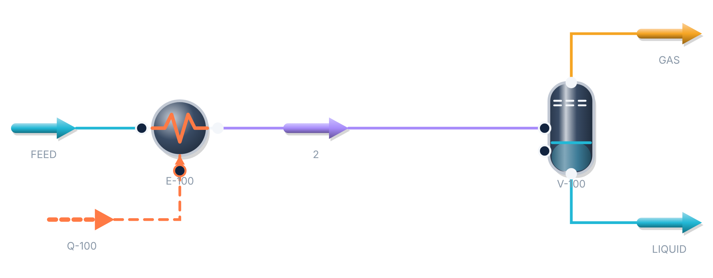

Flowstead
PROCESS ENGINEERING WORKBENCH
Did you know? Flowstead colours every stream by its phase.
Vapour, liquid or two-phase, from the solved vapour fraction. On the flowsheet and on the printed PFD.

Vapourvapour fraction 0.9999 or more
Liquidvapour fraction 0.0001 or less
Two-phaseanything in between
Energy streamheat or power duty